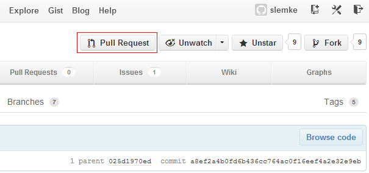

GIT Advanced
Medieninformatik
January 10th, 2013
Studiengang Medieninformatik an der Fachhochschule Köln
Campus Gummersbach
Forks
- Forks bieten eine Möglichkeit an anderen Projekten teilzunehmen
- Erstellt eine Kopie des Hauptprojekts
- Kann unabhängig vom Hauptprojekt agieren..
- Aber auch jederzeit Updates vom Hauptprojekt mit einbeziehen
Wie erstelle ich ein Fork?
- ein Fork erstellen
- das Fork clonen
git clone git@github.com:username/forkname.git- Upstream einstellen
git remote add https://github.com/username/hautprojekt.git- Upstream daten laden
git fetch upstream
Übung: Forks
- Projekt auf GitHub Forken
- URL: http://www.github.com/slemke/git-advanced
- Update abwarten
- Daten vom Hauptprojekt pullen
- Etwas im Projekt ändern
- Warten!
Pull requests
Pull requests bieten eine Möglichkeit die Änderungen an das Hauptprojekt zurück zu geben.

Übung: Pull request
Nun werden die Änderungen aus der Übung vorher an das Projekt zurück gegeben!
GitHub Pages
- Es gibt zwei Arten von Pages:
- User- und Organisationpages
- Projektpages
- GitHub Pages bietet eine einfache Möglichkeit zur Dokumentation/Präsentation des Codes am selben Ort
User Pages
- User Pages werden in einem Repository gespeichert, mit einem bestimmten Namen
- Beispiel: slemke.github.com
- Die Daten müssen in der "master" branch liegen
Project Pages
- User pages liegen im selben Repository wie der Code
- allerdings nicht in der "master" branch, sondern unter "gh-pages"
Page Generator
- Für die Menschen die zu faul oder zu untalentiert sind gibts auch einen Page Generator

Übung: User Pages
- Ein Repository mit folgender Syntax anlegen
username.github.com- clonen, html datei ablegen, pushen
- über username.github.com aufrufen
Saubere History mit rebase
- Die History ist eine Auflistung der Commits
- Manchmal möchte man Änderungen vornehmen
- Beispiel: saubere History für leichtere Einbindung in das Hauptprojekt
Struktur mit git merge

Struktur mit git rebase

Ändern des letzten Commits
- Manchmal möchte man den letzten Commit aus der History entfernen oder ändern.
git commit --amend- Ermöglicht die Bearbeitung des Commits mit einem Texteditor
Änderen mehrerer Commits (Interactive rebase)
git rebase -i HEAD~3
Ändert die letzten 3 Commits
pick f7f3f6d changed my name a bit pick 310154e updated README formatting and added blame pick a5f4a0d added cat-file # Rebase 710f0f8..a5f4a0d onto 710f0f8 # # Commands: # p, pick = use commit # e, edit = use commit, but stop for amending # s, squash = use commit, but meld into previous commit # # If you remove a line here THAT COMMIT WILL BE LOST. # However, if you remove everything, the rebase will be aborted. #Codequelle: git-scm.com
Neusortieren von Commits
Verhält sich wie interactive rebase nur das man die commits über den Texteditor neu sortiert.
Zusammenfassen von Commits
pick f7f3f6d changed my name a bit squash 310154e updated README formatting and added blame squash a5f4a0d added cat-file
- Wählten den ersten Commit
- Nimmt die anderen beiden Commits und fügt sie dem ersten hinzu
Splitten eines Commits
pick f7f3f6d changed my name a bit edit 310154e updated README formatting and added blame pick a5f4a0d added cat-file
$ git reset HEAD^ $ git add README $ git commit -m 'updated README formatting' $ git add lib/simplegit.rb $ git commit -m 'added blame' $ git rebase --continueCodequelle: git-scm.com
Splitten: Ergebnis
$ git log -4 --pretty=format:"%h %s" 1c002dd added cat-file 9b29157 added blame 35cfb2b updated README formatting f3cc40e changed my name a bitCodequelle: git-scm.com
Ende!
Danke für eure Aufmerksamkeit!